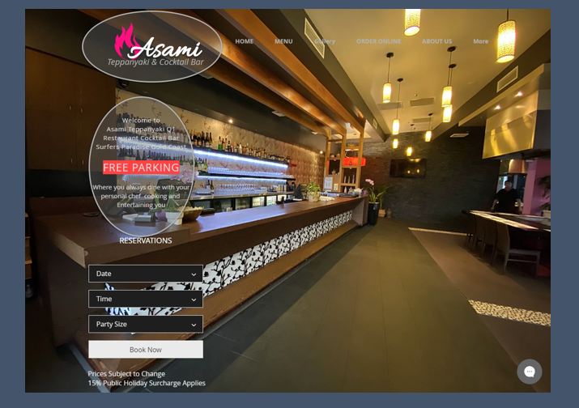
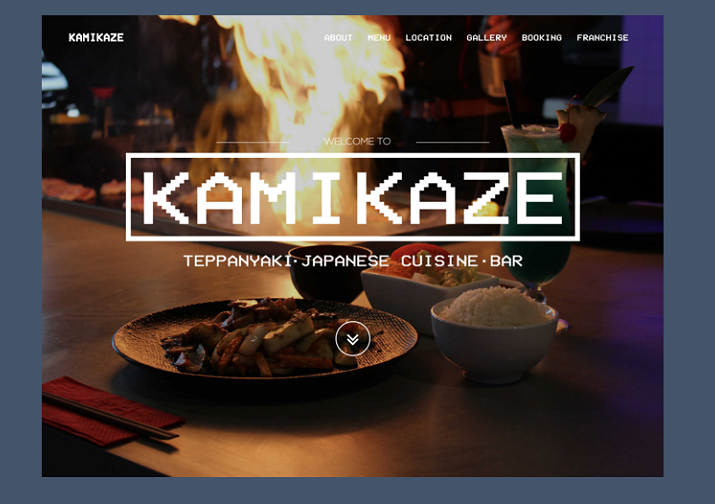

Teppanyaki Bar
This project involved the design and development of a fully responsive website for the local Japanese restaurant, Teppanyaki Bar.
See full working website here

The Challenge
The principle aim of this project was to develop a website to increase customers for the restaurant. This website would be completely responsive and designed using modern and contemporary practices.
My Role:
- User Research & Analysis
- Wireframes
- UI Design
- HTML/CSS/JS development
RESEARCH
I began my research by interviewing customers about the current online information of the restaurant that can be found on Facebook or Google. Some questions that were asked included:
- What information was easy to find?
- What information was difficult to find?
- Are photos of the restaurant/food important?
These helped me gather some issues in responsiveness that must be avoided.
- Difficulty in finding content
- Misplace of content and/or irrelevant content
- No photos to draw customers in
Goal
- To build a new website with a mobile-friendly interface that has a modern design
- To give users easy access to what they want in a first glance
- To help the restaurant gain more customers by showing that they care about their online presence
Competitive Analysis
I gathered some inspiration by looking at existing websites for other Teppanyaki restaurants. These included Asami Teppanyaki and Kamikaze Teppanyaki.
Asami Teppanyaki
Kamikaze Teppanyaki
IDEATING SOLUTIONS
Low-Fidelity Wireframes
I began the design process by sketching rough wireframes on paper. Based on the research of other modern restaurant websites, I decided to go with a one-paged website. This would make it neater and easier for the user to find everything they needed. I also decided to add in parallax scrolling effects as it is a very popular web design to create a sensation of depth and an interesting browsing experience.
Medium-Fidelity Wireframes
I turned my revised sketches into an interactive prototype done with Adobe XD. I defined the UI elements, visual hierarchy and design patterns.
WEBSITE DEVELOPMENT
I developed the website using HTML, CSS and JavaScript. This was a strong learning process as I followed along many youtube tutorials and online sources to transform the design into a fully functional website.